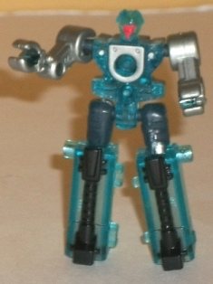
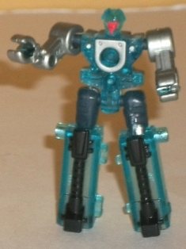
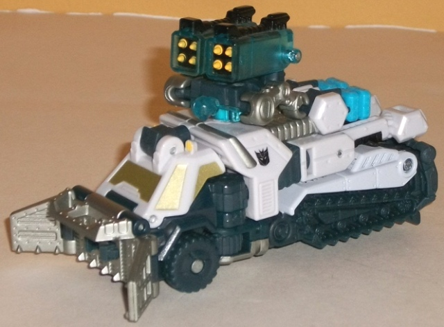
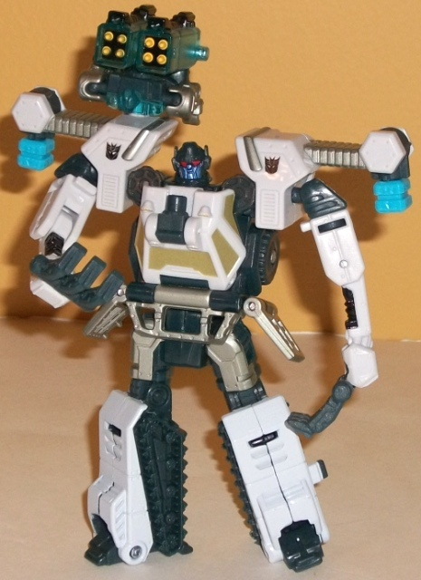
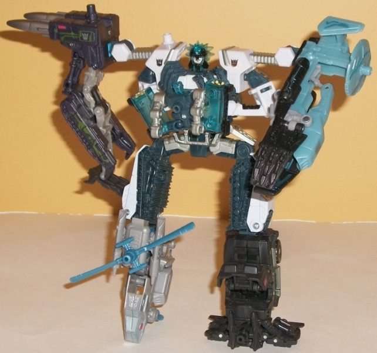

Chainclaw
Chainclaw

Allegiance : Minicon
Difficulty of Transformations : Very Easy
Color Scheme : Transparent icy blue, silver, and some black, light red, dark greenish blue, and yellow
Individual Rating : 5.3
Icepick
w/ Chainclaw
Chainclaw

Allegiance
: Minicon
Difficulty of Transformations
: Very
Easy
Color Scheme
: Transparent icy blue,
silver, and some black, light red, dark greenish blue, and yellow
Individual Rating
: 5.3
Chainclaw's robot mode
is pretty solid for a Power Core Minicon, and definitely was the priority
in terms of the design. From a cursory glance, you wouldn't guess he transformed
into anything-- there's no real extras from his other modes here, and he's
just a basic, humanoid figure. That's not to say he doesn't have his own
unique details-- the clamps on his arms; his blank, drone-like face; and
his bulky lower legs help to differentiate him a bit from the other Power
Core Minicons in terms of looks. His main color of transparent icy blue--and
some dull greenish blue on his upper legs-- goes quite well with Icepick,
of course, though the silver and black paint detailing help keep him from
getting too "one-tone" in his color scheme. The light red faceplate also
contrasts quite well with the blue, and the tips of his missile pods (which
are his feet) are painted yellow and look pretty good. Heck, Chainclaw
has quite a lot of paint detailing for a Power Core Minicon-- not that
I'm complaining, of course.
Both of Chainclaw's
weapon modes (for either a robot or a vehicle to wield) are identical--
you literally just fold Chainclaw's legs up against his back and plug him
into whatever Powerlinx port on the larger figure you wish (he also has
a Powerlinx port on his back to form a small handle should someone with
round hand-holes-- i.e., not Icepick-- wish to hold him in one of their
hands). It forms a decent enough missile pack, but obviously you have to
ignore his face coming out the front and the hands poking out of the sides.
That obviously can be a bit difficult, though at least his weapon mode
isn't unwieldy or anything, and given the central point of his Powerlinx
port in this mode, he can rotate in-place to "fire" at any enemies.
Chainclaw's chest armor
mode is easily the weakest of his modes (as is the case with most Power
Core Minicons, really). With this mode you just fold up Chainclaw's legs
sideways instead of behind him. Voila... armor mode? If they say so, I
suppose. It's pretty obviously just Chainclaw doing the splits, though,
and other than it forming a roughly rectangular shape, there's nothing
about this mode that makes it obvious he's supposed to be chest armor.
Chainclaw has an excellent
robot mode, but his overly simplistic transformation (even for a Power
Core Minicon) makes his chest armor mode incredibly weak, and very obvious
hands on the sides of his weapon mode(s). Still, he's definitely not the
worst Power Core Minicon out there, and there is something to be said for
a missile launcher weapon mode that can rotate in place on its port...
 Icepick
Icepick



Allegiance
: Decepticon
Difficulty of Vehicle/Robot Transformation
:
Easy
Difficulty of Torso Transformation
:
Very Easy
Color Scheme
: Off-white, dark greenish
blue, silver, and some light sky blue, light red, metallic bluish purple,
pale metallic gold, transparent icy blue, black, and yellow
Individual Rating
: 8.5
Icepick's vehicle mode
is a slightly futuristic snow plow... mobile. Yeah. Anyways, it looks pretty
good, for the most part-- beyond the fairly obvious combiner ports on the
top, there aren't any robot mode extras, and the proportions are more or
less good. The color scheme of off-white and greenish blue is perfect for
an arctic vehicle, and all the mold detailing you'd expect on such a vehicle
is here-- treads, panels with "bolts" in them, treaded tires, and the like.
The paint detailing-- for the most part-- is pretty good. There's some
nice silver on the front and top, and some fairly pretty pale gold windows,
both of which go well with the overall color scheme. However, there's a
lot of excellent mold details on the greenish blue plastic-- such as the
treads-- that are completely unhighlighted, when they really should've
been painted silver or something. Icepick's Powerlinx port is on the top
of this mode, a bit behind the cockpit, though there's another flip-out
one right above the cockpit (though that's more used for the robot mode).
Icepick's robot mode
transformation is pretty straightforward, with most of his limbs swinging
towards the front of the vehicle and forming around the cockpit, which
becomes the chest. In general, this mode is pretty good, though his legs
look a bit overly bulky/chubby. This isn't helped by the feet, which are
rather small, and make him a bit less stable than he otherwise would have
been (though he's by no means outright
un
stable). This is in contrast
to his arms, which are a bit long and skinny, with long, sharp-looking
claws on the end (and give him a bit more of a Decepticon-ish look). I
love the way his plow forms his waist, and there's a Powerlinx port right
on his chest should you want to power him up with a Minicon. The head sculpt
is really blah, though-- one of my chief complaints about this mode, actually,
as (like its feet) it looks way too chubby and non-threatening. It's also
molded at a slightly angle to his neck, almost like his face is slowly
melting into his chest. Ick. I'm also not fond of the connector ports-on-rods
sticking out of his shoulders-- they're too obviously his torso mode shoulders,
and stick out just a bit TOO much to work with the silouhette. As for articulation,
Icepick can move at the neck, shoulders (at four points), elbows, some
restricted movement at the wrists, as well as movement at the hips (at
two points) and knees (at two points). It's not extraordinary, but it's
hardly bad, so you can get him in some pretty cool poses.
Icepick's torso mode
transformation is one of the most simplistic out of all the Power Core
Combiners-- basically you switch up his head and then fold his arms and
legs in a certain way and you're done. However, although it's not the best
torso mode of the line, it looks quite good. The upper legs are admittedly
a bit weak, as they're too obviously just his legs bent at the knees and
turned sideways, but his arms fit in and "enlarge" the chest section surprisingly
well, with the claws forming nice accents on the sides. I do wish that
those regular robot mode arms pegged in somewhere in this mode, though,
as they rotate with the shoulders and thus can come "undone" from their
set position as halves of the chest fairly easily. But MAN, that head sculpt...
THAT is certainly a sculpt worthy of the name Icepick! It's mostly transparent
icy blue, with spikes of "hair" and a stern, royal-looking face. Much,
MUCH better than his normal head, that's for sure. I have to admit I'm
not a fan of how wide-stanced his shoulders are as a result of the location
of the arm combination pegs, though. Also, the hinges on the hips are a
little weak, which means with the added weight of the leg drones on those
limbs they can get a bit floppy, unfortunately. As for movement, in this
mode he can move at the neck, shoulders (at two points), hips (at three
points), and knees (at two points)-- roughly standard for the torso of
a Power Core Combiner.
Icepick is a bit of
an above-average toy for the line. He's quite simple, but for the most
part he gets the job done in all three modes. Not are particularly spectacular
or amazing in their engineering, but none are at all bad, either. My biggest
problems with him are the ugly normal robot head sculpt, the slight floppiness
of his hip & knee hinges, and how wide-stanced his torso mode shoulders
are. If you like the idea of the line, I'd mildly recommend him.
Reviews by Beastbot